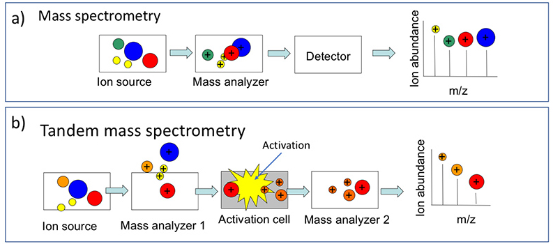
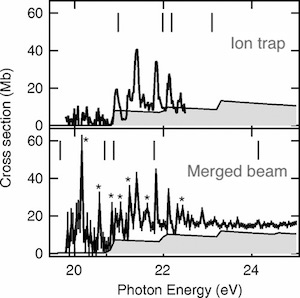
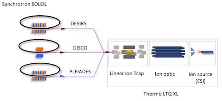

Alexandre Giuliani
Spectroscopy & Spectrometry
Tools
New ion activation methods for tandem mass spectrometry
Mass spectrometry holds an important place in structural chemistry. A typical mass spectrometer is composed of an ion source, a mass to charge ratio (m/z) analyzer and an ion detector. Thus, a mass spectrum is a representation of the ion abundance as measured by the detector as a function of the m/z ratio, as illustrated in below. Molar masses and stoechiometries may be determined from mass spectra. The addition of another mass filtering stage, either in space or in time, allows a specific m/z range, corresponding to a species of interest, to be selected and activated. During the activation step, ions receives internal energy, which ultimately leads to the fragmentation of the ion. This method is termed tandem mass spectrometry or MS/MS. When fragment ions are selected and activated in multiple successive steps, the process is referred to as MSn 1.
The mean of activation in tandem MS is crucial as it determines to a large extend the outcomes of the process. The most used method, referred to as collision induced dissociation (CID), is based on inelastic collisions between the targets and an inert gas. CID belongs to the slow heating class of methods in which the internal energy of the ions is gradually increased until a dissociation threshold is reached. Hence, CID activation leads principally to the dissociation of the weakest bonds. This characteristic prevent some systems to be analyzed by CID: such as those bearing labile groups or non-covalent assemblies. Gaining some control over the fragmentation phenomenon is therefore very appealing.
The study of the spectroscopic properties of bioorganic ions in the gas phase,
Ion Spectroscopy
Spectroscopy of ions is not a trivial task. Indeed, it requires to confine high densities of charged particles within small volumes, during long enough period of time and the use of high brilliance photon sources. Usually, ion spectroscopy is performed using merged beams setups, such as the MAIA experiment at SOLEIL, in which large ionic currents are produced by ECR sources. The ion beam is then merged with monochromatic photons from the beamlines over ~1 m distance. These setups have the great advantage to provide absolute cross section measurements, but suffer from the restriction of the targets, mostly atomic, that can be ionized by ECR sources. In another concept, ion spectroscopy was performed in ion traps, in which the lower ionic target density produced by the classical ion sources was compensated by the ability to confine the ion longer, leading to very long irradiation times. This concept had been successfully implemented at Free Electron Lasers for infrared multiphoton dissociation spectroscopy, such as at CLIO or at FELIX but also using tunable laboratory lasers in the visible-UV range. However, synchrotron radiation, which is orders of magnitude less powerful than lasers, had so far not been used for ionization of trapped ions.
I had the chance to participate to the proof of the concept of the use of synchrotron radiation to perform ion spectroscopy on stored ions in traps. In this work 2, performed at Elletra in 2008 PRL 2008 the photoionization of the xenon radical cation was measured in the XUV and compared to measurement from the merged beams experiments. It appeared that ion trap measurements were not affected by the presence of metastable species, which was the case with the merged beams data.
Thank to a [[**2011-2009* ANR (white program) - /Synchrotron radiation for tandem mass spectrometry (SRMS2)/][grant] from the French national funding agency in 2009, we have coupled an ion trap mass spectrometer with the UV and VUV beamlines DESIRS and DISCO [[[t45][J. Synchrotron Rad. 2011] and later with the soft X-rays PLEIADES beamline at SOLEIL.
This setup takes profit from the potential of modern API sources such electrospray (ES), nano electrospray (NSI) or atmospheric pressure photoionization (APPI) to place in the gas phase systems which would be hardly possible to vaporize otherwise 3. Hence it is possible to probe the spectroscopy and dynamic of a wide variety of targets isolated in the gas phase by action spectroscopy. Ions of interest produced by the source are selected and accumulated in the ion trap until the desired capacity is reached. The radiation is then admitted in the trap for a controlled amount of time, after which the trap is emptied and the products of the irradiation are analyzed. Repeating this process over a set of wavelength produces a set of tandem mass spectra leads to data such as 4
From these data, the abundance of a particular ion may be measured and plotted as a function of the photon energy, leading to relative cross section for the individual process at the origin of the ionic signal considered.
TODO X-ray oxidative foot printing
TODO Synchrotron Radiation Circular Dichroism (SRCD)
TODO VUV absorption spectroscopy
Softwares
Igor Pro
I have been using Igor Pro from Wavemetrics since my diploma thesis (mémoire de licence) in Liège and I used to use it extensively for data treatment and to produce figures. I also use Igor for control and acquisition. Almost all my published data have been treated and produced in final form using Igor.
Org-mode
Org-mode made me use emacs, a software which I couldn't get into previously. I guessed I needed a sufficient incentive to overcome the barrier! Org-mode was that incentive. It changed drasticallt the way I worked. Org-mode 5 is originally a powerful tools for task management, projects planning, notes taking and writing documents. However, it offers a very useful way to literate programming 6. Gradually my data treatment shifts to org-mode and literate programming.
Footnotes:

Figure 1: Illustration of the principles of a) mass spectrometry and b) tandem mass spectrometry analysis.

Figure 2: Photoionization cross section of the Xe+ cation measured using an ion trap (top) and the merged beams technique (bottom) are compared with theoretical results (thin lines), modified from .

Figure 3: Scheme of principle of the coupling of the linear ion trap with three beamlines at SOLEIL.

Figure 4: 2D representation of the activation of the single protonated ion [M+H]+ of substance P in the 8 to 16 eV, showing the production ion mass spectra as a funcion of the photon energy. More details are available here
There is plenty of excellent resources on literate programming on the web. A non exhaustive list: